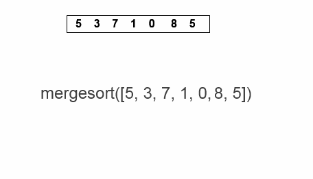

Insertion Sort check two number of list and change its Position with correct Position in any order may be Assending or Dessinding Order. Insertion sort is a simple sorting algorithm that works similar to the way you sort playing cards in your hands. The array is virtually split into a sorted and an unsorted part. Values from the unsorted part are picked and placed at the correct position in the sorted part.
Merge Sort Implementation
The
Syntax
For Merge
Sort In Javascript
function merge(left, right) {
let arr = []
// Break out of loop if any one of the array gets empty
while (left.length && right.length) {
// Pick the smaller among the smallest element of left and right sub arrays
if (left[0] < right[0]) {
arr.push(left.shift())
} else {
arr.push(right.shift())
}
}
// Concatenating the leftover elements
// (in case we didn't go through the entire left or right array)
return [ ...arr, ...left, ...right ]
}
The
Merge
Sort
Algorithm
Analysis
Best Case: O(nlogn)
Average Case: O(nlogn)
Worst Case: O(nlogn)
Space Complecity: O(n)
Merge Short Algorithm are External Shorting Algorithm
Merge Short Algorithm are Recursive Shorting Algorithm
Stability: Yes Merge Short Algorithm Are Stable Algorithm
Adpative: Yes Merge Short Algorithm Are Adpative Algorithm
Merge Short Algorithm are Slower Algorithm then Other